Generated and measured for private review. Owner art acceptance and gameplay review are pending.
Six distinct city zones, six new fictional humanoid alien types plus a four-armed boss, and seven supplemental Mac combat actions. Click any image to inspect original native pixels. The PNGs were not resized, repainted or processed after generation.
Service Alley
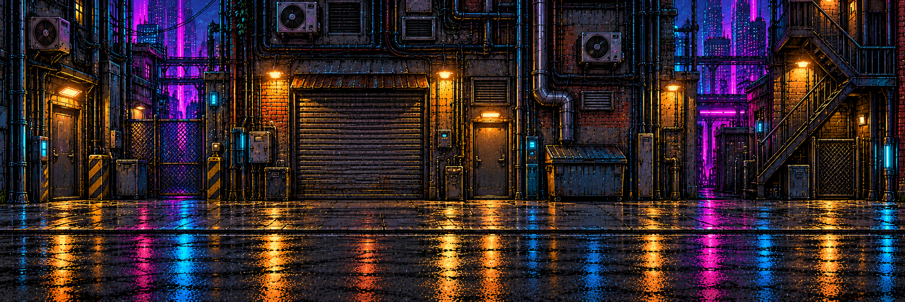
Brick service entrances, amber lamps, pipes and shutters. Native 2167 × 725.
Open native imageNight Market
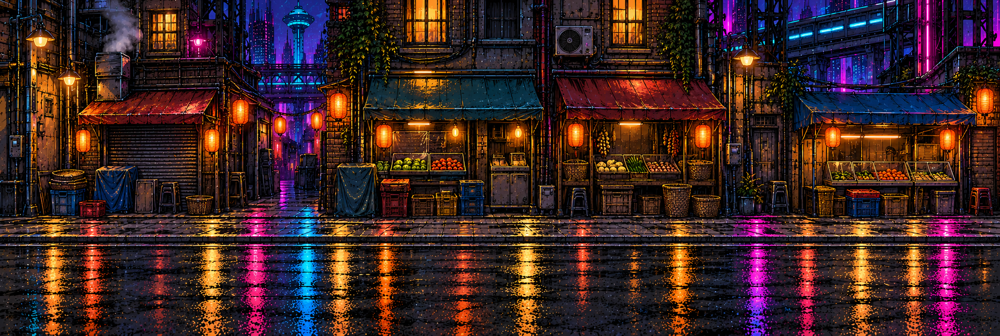
Closed stalls, lanterns and market displays behind the clear pavement. Native 2161 × 728.
Open native imageTransit Concourse
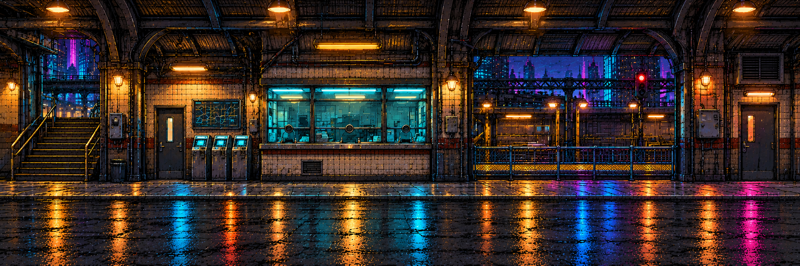
Ribbed transit roof, ticket windows and rear train architecture. Native 2172 × 724.
Open native imageRelay Canal
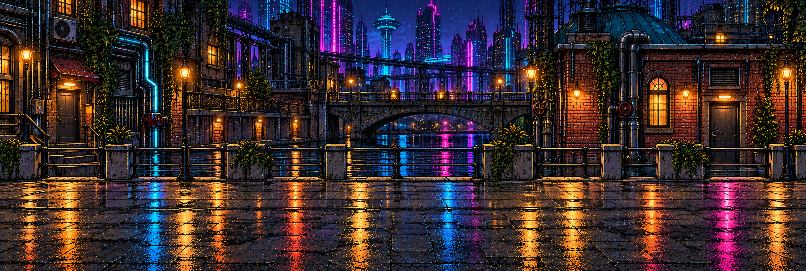
Rear canal and bridge, pump station and a clear promenade. Native 2160 × 728.
Open native imageRooftop Relay
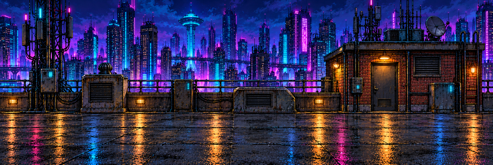
Rooftop access room, rear antennas, compact relay fixtures and skyline. Native 2162 × 727.
Open native imageBroadcast Plaza
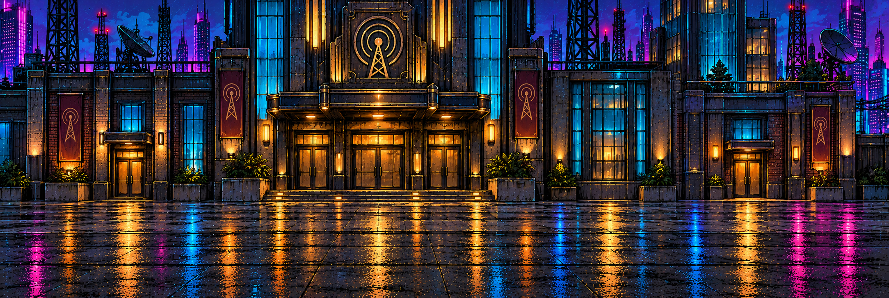
Broadcast headquarters facade, normal entry doors and broad stone plaza. Native 2167 × 726.
Open native imageChitin Scuttler
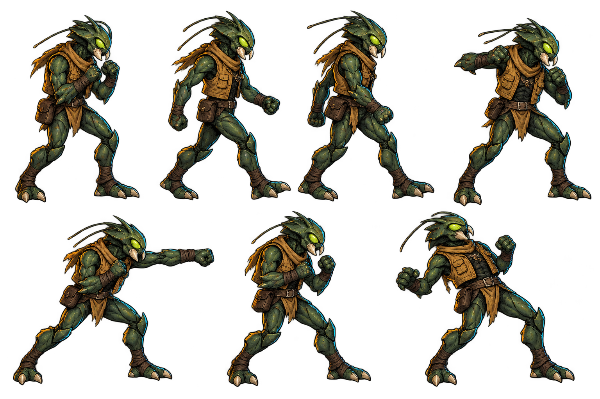
Compact jade insect jabber with ivory mandibles and ochre street vest. Blood: green. Seven registered actions.
Measured frames · Open native imagePsion Lancer
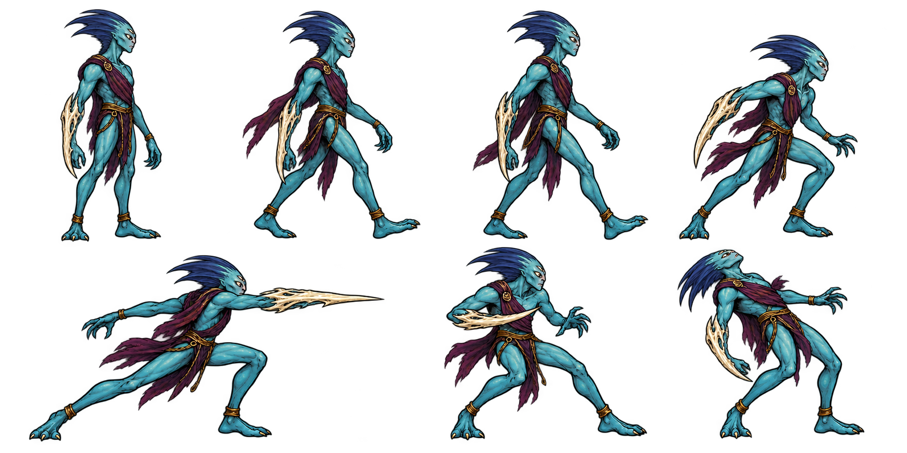
Tall teal spear runner with swept indigo fin, ivory forearm blade and plum sash. Blood: purple. Seven registered actions.
Measured frames · Open native imageBile Spitter
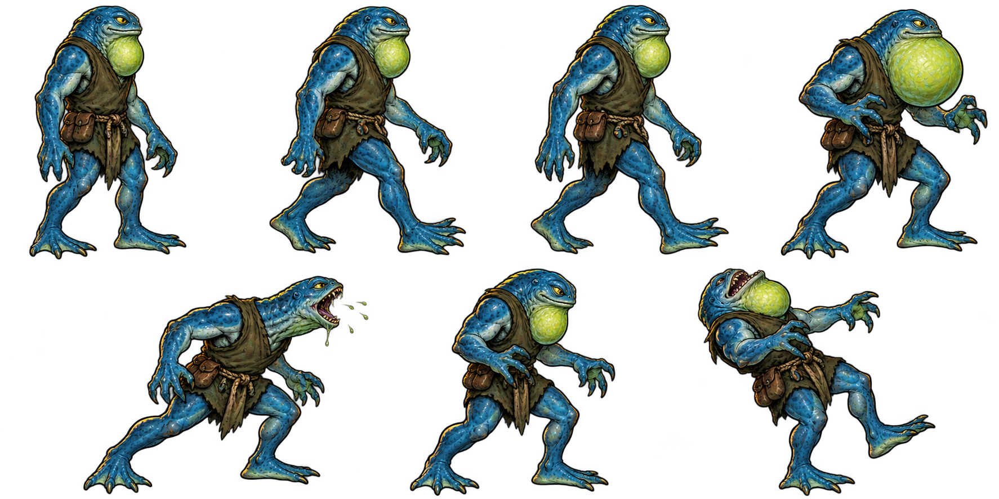
Broad blue amphibian with lime throat sac and webbed extremities. Blood: green. Seven registered actions.
Measured frames · Open native imagePrism Guard
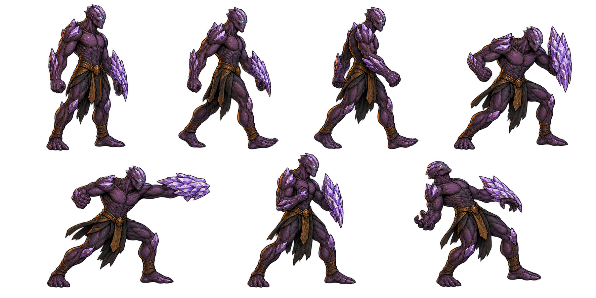
Violet plated humanoid with attached faceted organic forearm shield. Blood: purple. Seven registered actions.
Measured frames · Open native imageRift Stalker
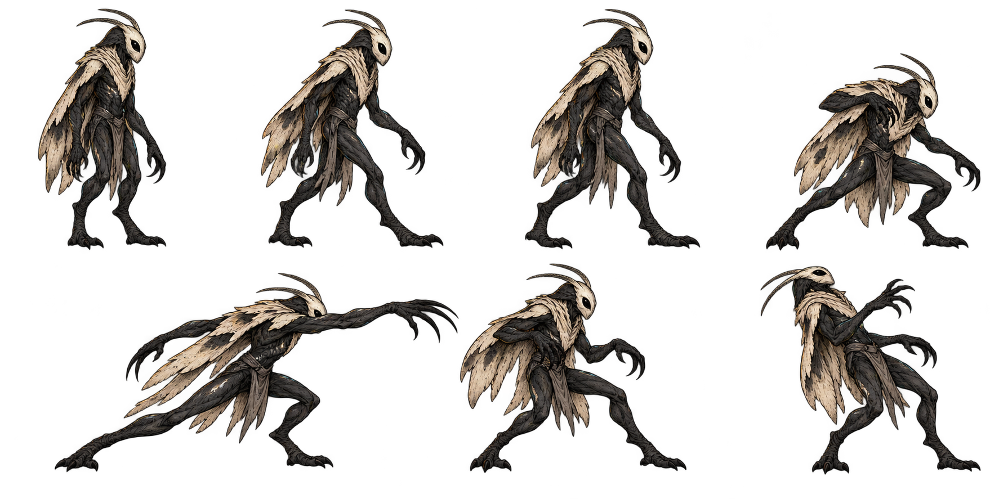
Cream moth face over charcoal body and mantle, long attached claws. Blood: purple. Seven registered actions.
Measured frames · Open native imageShock Mantid
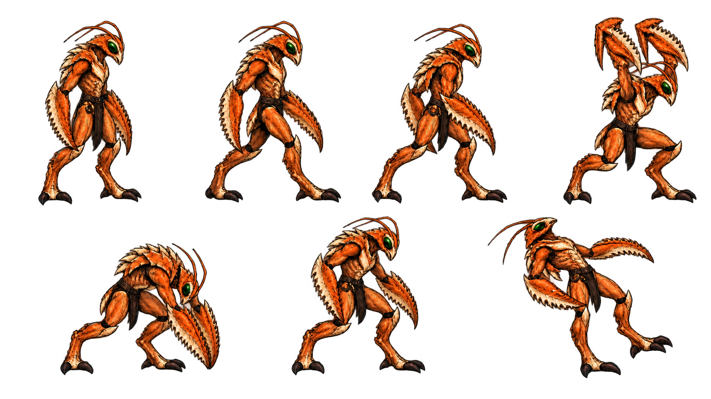
Orange mantis warrior with pale bone plates and serrated forearms. Blood: green. Seven registered actions.
Measured frames · Open native imageNull Regent
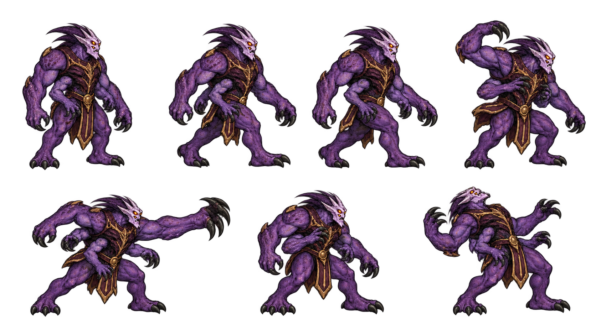
Large four-armed violet registry boss with pale crown and bronze waist ornaments. Blood: purple. Seven registered actions.
Measured frames · Open native imageMac: seven new combat actions
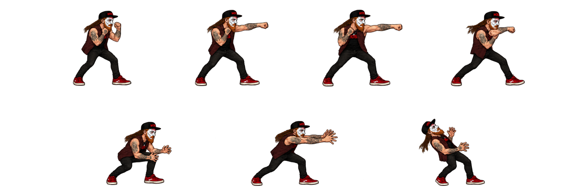
Approved Mac model retained; windup, jab, cross, finisher, throw windup/release, hurt. Native281px standing reference.
Measured frames · Open native imageEach atlas uses measured nonuniform frame rectangles and foot pivots at one common actor scale. Green and purple blood are gameplay particles rather than painted sprite pools. Standalone sheets do not confirm game feel, foot contact during camera movement, or final owner acceptance.